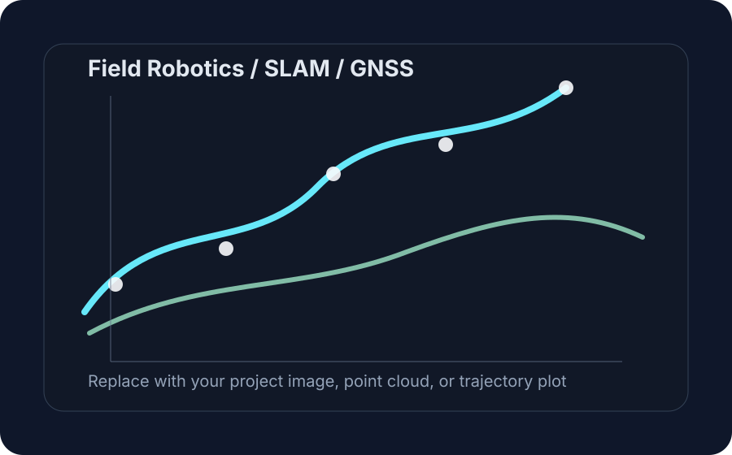

Project portfolio
Research projects with code, sensors, datasets, and field relevance.
Replace placeholder images with your own point clouds, trajectory plots, orchard photographs, Jetson setup images, and videos as your lab grows.
VGGT-SLAM with Pose3 and GNSS Fusion
Migration from ambiguous visual-scale reconstruction toward a metric Pose3 backend with stereo-derived scale, GNSS unary factors, vertical smoothness, and factor-graph diagnostics.
Robotic Perception for Mining and Industrial Inspection
Adapting field perception pipelines for mine roads, tunnels, industrial environments, worker safety perception, terrain reconstruction, and digital twins.